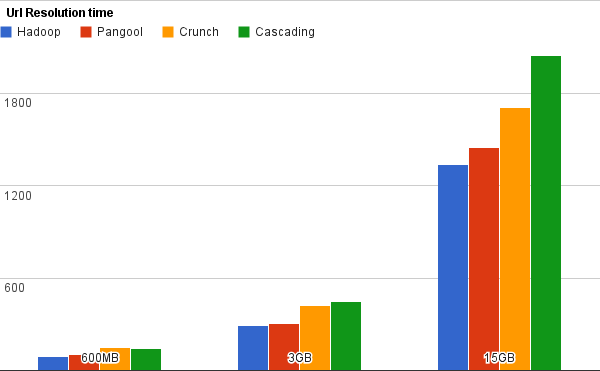
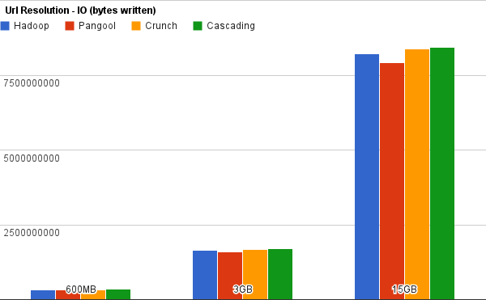
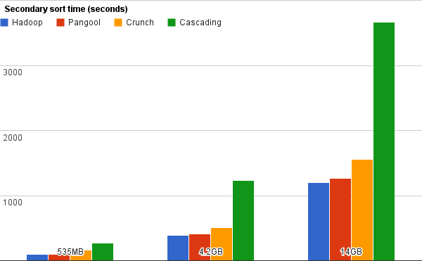
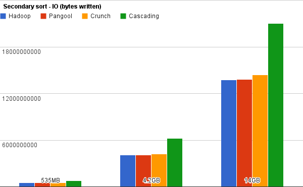
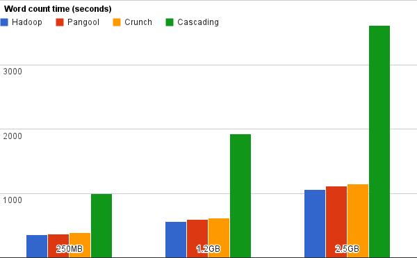
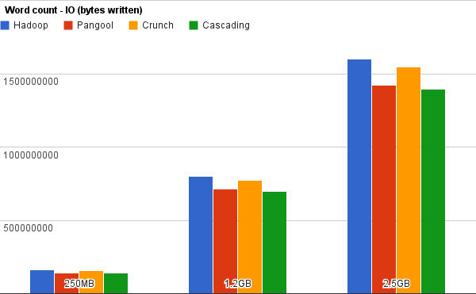

In order to demonstrate that Pangool performs comparable to Hadoop, we have designed a benchmark and executed it in EC2. This benchmark has been updated as of 9th of March of 2012.
We have used Whirr 0.7.1 to instantiate a CDH3 cluster with 4 m1.large slave nodes and 1 master node. We used the following properties:
whirr.cluster-name=cdh-cluster whirr.instance-templates=1 hadoop-jobtracker+hadoop-namenode+ganglia-monitor+ganglia-metad,4 hadoop-datanode+hadoop-tasktracker+ganglia-monitor whirr.provider=aws-ec2 whirr.hadoop.install-function=install_cdh_hadoop whirr.hadoop.configure-function=configure_cdh_hadoop whirr.hardware-id=m1.large
We have executed three different examples with three different input sizes. Each of the examples were launched in a comparable implementation in Hadoop, Crunch and Cascading. You can see the implementations in the pangool-benchmark project. If you find something wrong, please send us your feedback. You are free to suggest alternative implementations that could perform better.
For Cascading, we used the 1.2.5 stable release. For Crunch, we built the 0.2.0 version in 2012-02 and used Avro serialization because we found it to be much more efficient than TupleWritables.
You'll find a script in pangool-benchmark that launches the full benchmark. Please read the header before launching it to make sure you meet all the conditions for launching it.
The Url Resolution example in Pangool shows how to perform a reduce-side join easily. We have implemented alternative versions of this example in Hadoop, Crunch and Cascading (click to see each of them).
For generating the input datasets, we used the following commands (you'll find them in the launch-benchmark.sh script we mentioned above):
hadoop jar $PANGOOL_EXAMPLES_JAR url_resolution_gen_data url-map-1.txt url-reg-1.txt 1000 10 1000 hadoop jar $PANGOOL_EXAMPLES_JAR url_resolution_gen_data url-map-2.txt url-reg-2.txt 5000 10 1000 hadoop jar $PANGOOL_EXAMPLES_JAR url_resolution_gen_data url-map-3.txt url-reg-3.txt 5000 50 1000
These are the results that we obtained in time (seconds) and IO (bytes):
 
We can see that all implementations had a comparable IO footprint. However, we clearly see that Pangool and Hadoop are much closer in efficiency than Crunch or Avro. In this case Pangool performed 8% worse than Hadoop, Crunch 27% and Cascading 70%.
The Secondary Sort example in Pangool shows how to perform a secondary sort using multiple fields easily. We have implemented alternative versions of this example in Hadoop, Crunch and Cascading.
For generating the input datasets, we used the following commands (you'll find them in the launch-benchmark.sh script we mentioned above):
hadoop jar $PANGOOL_EXAMPLES_JAR secondarysort_gen_data secondarysort-1.txt 100 100 1000 hadoop jar $PANGOOL_EXAMPLES_JAR secondarysort_gen_data secondarysort-2.txt 200 200 2000 hadoop jar $PANGOOL_EXAMPLES_JAR secondarysort_gen_data secondarysort-3.txt 300 300 3000
These are the results that we obtained in time (seconds) and IO (bytes):
 
In this example Hadoop and Pangool are both close in efficiency and IO footprint. However, Cascading deviates considerably in both aspects. Pangool performed 5% worse than Hadoop, Crunch 28% and Cascading 181%.
We used the default Word Count implementations of all APIs for this last benchmark. Because Word Count is a quite simple problem that doesn't involve joins or secondary sort, we are measuring here the most basic API overhead. Click to see the implementations for Pangool, Hadoop, Crunch and Cascading.
For generating the input datasets, we used the following commands (you'll find them in the launch-benchmark.sh script we mentioned above):
hadoop jar $PANGOOL_BENCHMARK_JAR wordcount_gen_data wordcount-1.txt 1000000 50 4 hadoop jar $PANGOOL_BENCHMARK_JAR wordcount_gen_data wordcount-2.txt 5000000 50 4 hadoop jar $PANGOOL_BENCHMARK_JAR wordcount_gen_data wordcount-3.txt 10000000 50 4
These are the results that we obtained in time (seconds) and IO (bytes):
 
We can see that in this case Hadoop, Pangool (5% worse) and Crunch (9% worse) performed similarly.
In this case, Cascading's overhead (257%) is not very meaningful because its default Word Count implementation doesn't include the use of its in-memory combiners whereas the other implementations (Pangool, Hadoop, Crunch) are already using Combiners.
We have seen how Pangool performs comparable to Hadoop in three different cases, performing between only 5 and 8% worse according to this benchmark. Except for the word count example - where Pangool code is larger than Hadoop's word count becase we can't reuse the Combiner as we are not writing Tuples as output - the implementations in Pangool are much more concise and easy than those of Hadoop, which are extremely complex because of the use of custom Comparators, custom data types and other boilerplate code.
Overall, in code conciseness, Cascading wins in all of the examples, but its performance is in other orders of magnitude. This is understandable, since Cascading is a higher-level API that solves a lot of problems that neither Hadoop or Pangool solve.
On the other hand, we have found Crunch to perform very good when used in conjunction with Avro. It is an interesting API because it solves higher-level problems like flow management while retaining a decent performance. However, we found the resulting code for both the Url Resolution and Secondary Sort example to be extremely complex and hard to maintain.